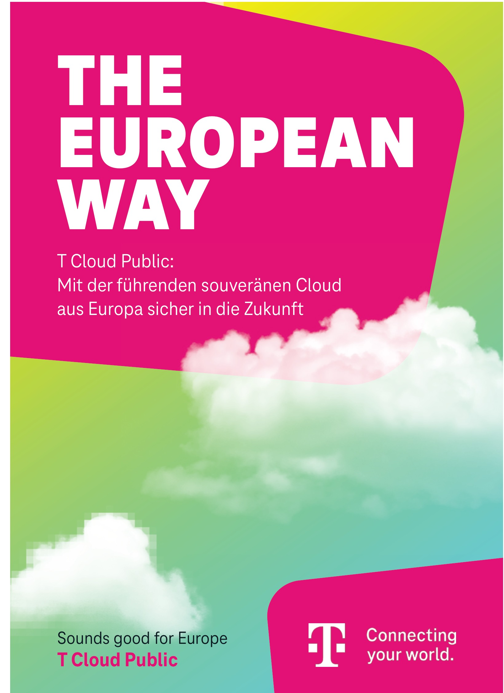
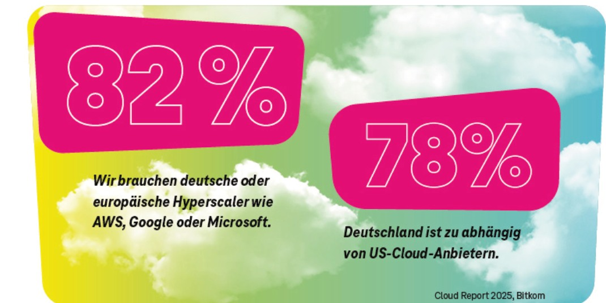
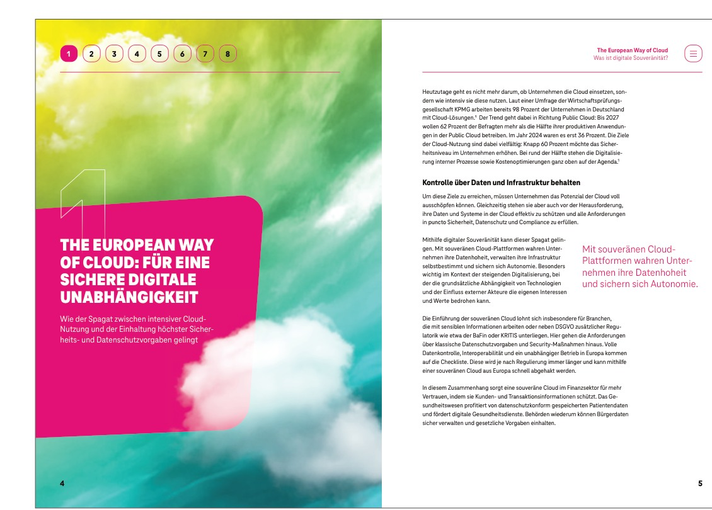
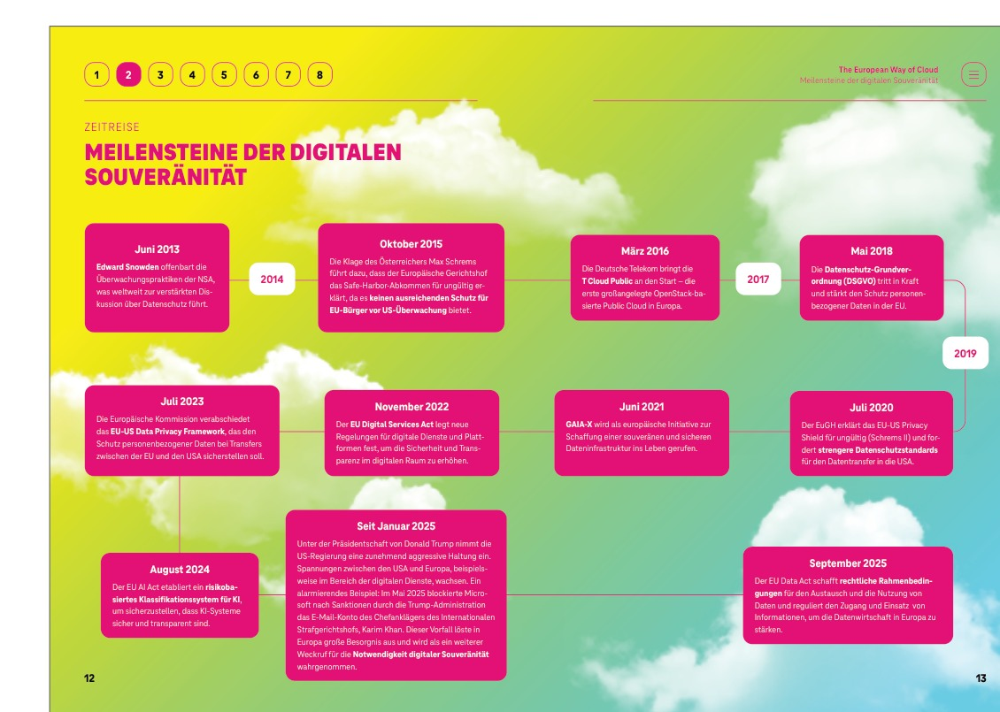

Task
Development of a communication platform for technology, cloud and digitalisation topics in a B2B environment. Complex content needed to be accessible to decision-makers and clearly connected to Telekom as a technology and innovation partner.
Telekom
A thought-leadership platform around digital sovereignty, cloud and transformation — designed to make complex B2B technology both clear and visually distinctive.

Task
Development of a communication platform for technology, cloud and digitalisation topics in a B2B environment. Complex content needed to be accessible to decision-makers and clearly connected to Telekom as a technology and innovation partner.
My contribution
Impact
Visual excerpts from the project, drawn from the selected-work portfolio.



Next project
Audi↗